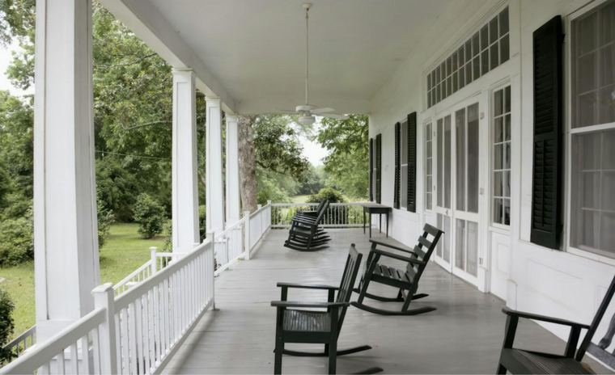

Living in Mount Pleasant, SC
Across the Cooper River from downtown, Mount Pleasant pairs a historic village and working shrimp docks with some of the area's newest neighborhoods.

Getting to Know Mount Pleasant
Mount Pleasant sits on the east side of the Cooper River, and the Arthur Ravenel Jr. Bridge connects it to the peninsula. The bridge opened in 2005, runs about 2.7 miles and carries a lane for people walking and biking alongside the traffic lanes.
The town has grown quickly, and you can feel the difference between its oldest streets and its newest subdivisions. That is why we walk buyers through both before they narrow their search.
Talk to a Mount Pleasant AgentPlaces Locals Love
Shem Creek
Once the hub of the local shrimping fleet, Shem Creek now has a park with a boardwalk and a float dock alongside its waterfront restaurants.
Pitt Street Bridge
A former trolley bridge to Sullivan's Island that now ends in the marsh. Locals call it the bridge to nowhere.
The Old Village
The town's original footprint, laid out in 1803, with just over 30 walkable blocks of historic homes.
Patriots Point
Home of the aircraft carrier USS Yorktown, open as a museum since 1976.

Homes in Mount Pleasant
The Old Village has historic homes on walkable streets near the harbor. Much of the rest of the town is made up of newer subdivisions built over the last few decades.
About three in four homes in Mount Pleasant are owner-occupied, according to the Census Bureau. We can help you compare neighborhoods by home age and HOA rules.
Ask About the HOA
Many Mount Pleasant neighborhoods have homeowners associations with their own rules on things like fences and short-term rentals. We request the HOA documents early so you can review them during your due diligence period.
Mount Pleasant FAQs
How do you get from Mount Pleasant to downtown Charleston?
The Arthur Ravenel Jr. Bridge connects Mount Pleasant to the peninsula. It also has a lane for walking and biking.
Which school district serves Mount Pleasant?
Charleston County School District serves Mount Pleasant as part of its East Cooper region. Confirm the assigned schools for a specific address with the district.
Is the Old Village historic?
Yes. It is the oldest part of town, laid out in 1803, and it has a different feel from the newer neighborhoods.
Do most homes have an HOA?
Many newer neighborhoods do. We pull the documents early so there are no surprises.
Compare Other Cities



Thinking About Mount Pleasant?
Tell us what you want in a home and we will send you a custom list of homes for sale in Mount Pleasant, then set up tours around your schedule.